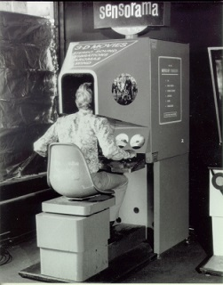
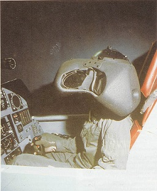
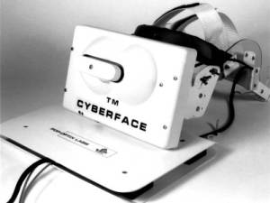
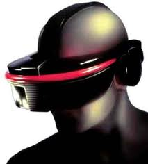
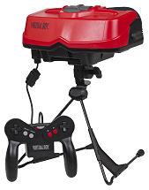
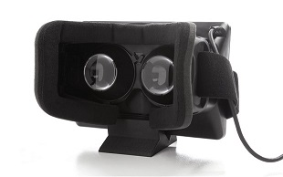
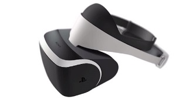
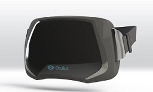

-
Sensorama 1957Morton Heilig invente le Sonorama - un simulateur composé d'images 3D ainsi que d'odeurs, des brises, et du son - pour créer une illusion de réalité.
-
Projet Headsight 1961Philco Corp. a développé le premier casque virtuel, permettant de voir « à distance » via une caméra vidéo Equipé d'un head-tracking, il sera utilisé dans un but d'entraînement militaire.
-
Ultimate Display 1965
 Ivan Sutherland invente le concept "Ultimate Display", l'écran ultime. Utilisant un visiocasque connecté à un ordinateur, l'utilisateur peut apercevoir un monde virtuel.
Ivan Sutherland invente le concept "Ultimate Display", l'écran ultime. Utilisant un visiocasque connecté à un ordinateur, l'utilisateur peut apercevoir un monde virtuel. -
Visually Coupled System 1968Utilisant les recherches de Sutherland et Evans et les travaux de de Daniel Vickers sur le suivi des déplacements, Thomas Furness a développé un casque virtuel appelé « visually coupled system » au Wright-Patterson Air Force Base.
-
Cyberface 1989"The Face Sucker" VPL Research fondée par Jaron Lanier, produit un visiocasque nommé Cyberface. Il sera le premier dans l'histoire à être commercialisé.SEGA VR 1993SEGA présente ses lunettes de VR enveloppantes durant le Consumer Electronics ShowVirtual Boy 1995"L'horreur" Développé par Nintendo, il est sans doute un des visiocasques les plus haïs. Son encombrement, son poids, une résolution très basse et un affichage à dominante rouge ont rapidement dégoutés tous les joueurs de ce concept.Oculus DK1 2012Oculus VR se tourne vers Kickstarter pour financer sa campagne de démocratisation auprès des développeurs du désormais célèbre Development Kit 1.Morpheus Mars 2014SONY annonce le projet Morpheus: la création d'un visiocasque de RV pour la PlayStation.Oculus Consommateur 2015La version grand public du célèbre visiocasque est annoncée, et sa sortie est attendue avec impatience.